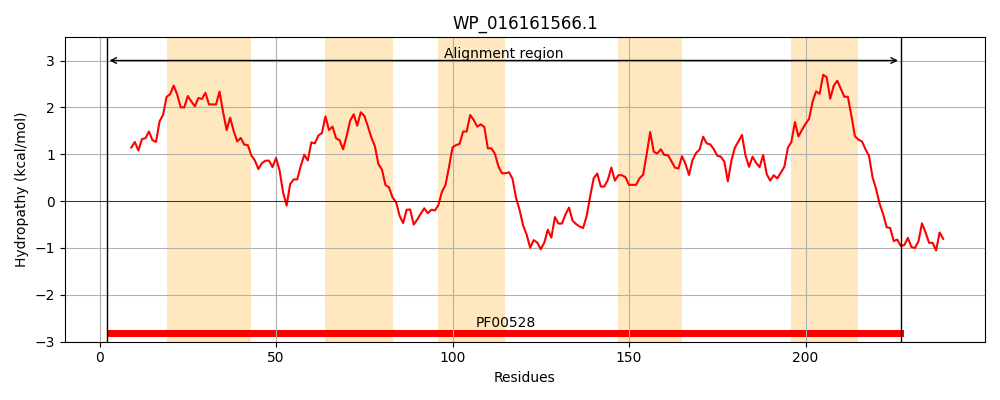
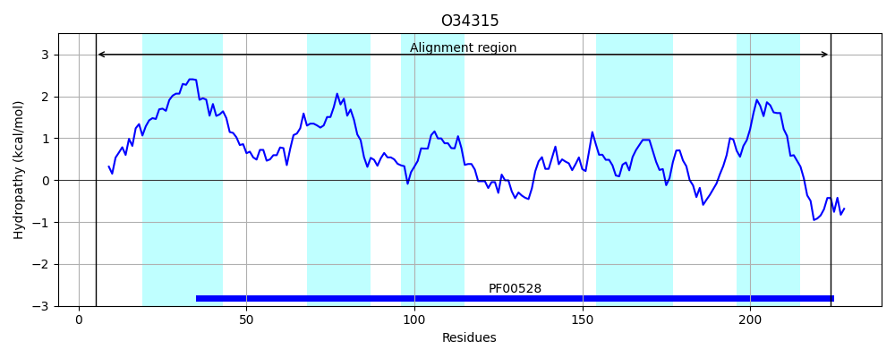
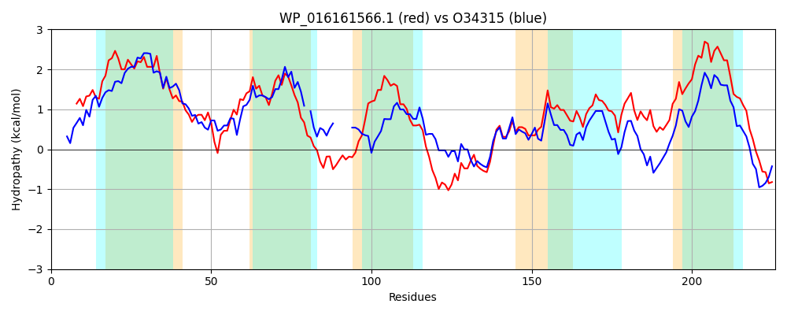

Hit Accession: O34315
Hit TCID: 3.A.1.3.13
Hit Description: gnl|BL_ORD_ID|7125 gnl|TC-DB|O34315|3.A.1.3.13 Probable amino-acid ABC transporter permease protein ytmL - Bacillus subtilis.
Mach Len: 226
e:0.000000
Query TMS Count : 5
Hit TMS Count: 5
TMS-Overlap Score: 4.500000
Predicted Substrates:CHEBI:6211;L-djenkolic acid, CHEBI:45655;S-methylcysteine, CHEBI:4048;cystathionine
BLAST Alignment:
Score: 361 , Bit scores: 143 bits, E-value: 3.0e-42, Alignment length: 226, Percentage identity: 39
Query: 2 FSLAFIRDNFTFILSALPVTLVITLLSLLFSTLLGAALAWVIIRQVPGVQWGAKVFLSFSRSVPVLVMLYFFFYVWPWIAAGLFGGPQDNMYHYKLSPLVAAVTALSLIFSAYFAETFRAGWNAVDKGQREAAWSIGLSGFTQFRRIIFPQAAVSALPNFTSVLIDLIKDTSLVYTITVIDLMAKANIAAARGFHFVEAYCVVLVIYIVLCLAIARALRSVERFLR 227
F + I D + + LPVTL I LSLLF +LG LA I +P V AKV++SF R P++V L+ FY P + GL G K+ P AAV +L +A AE RAG +VDKGQ EAA+SIGLSG FRRI+ PQA V A PN +++I +KDTSL ++I V+D+ + H +E Y + ++Y + + R E+ ++
Sbjct: 5 FDMNMIGDFVPTLTAYLPVTLYILTLSLLFGFVLGLFLALPRIYNIPIVNQLAKVYISFFRGTPIMVQLFIVFYGIPALT-GLIGIDTS-----KMDPFYAAVATYALSNAAAAAEIIRAGVGSVDKGQTEAAYSIGLSGSQAFRRIVLPQALVQAFPNMGNMVISSLKDTSLAFSIGVMDMSGRGQTLITSSNHSLEVYIALSIVYYAVAVLFEWFFRVAEKRIK 224 | Protein Hydropathy Plots: |
|---|
|  |  |
Pairwise Alignment-Hydropathy Plot:
|
|---|
|  |